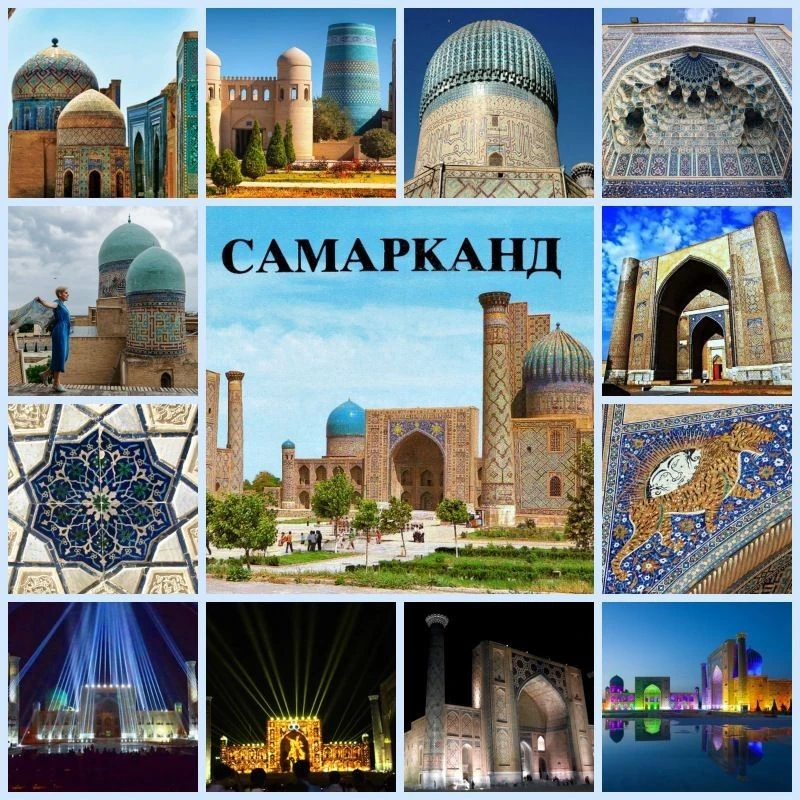
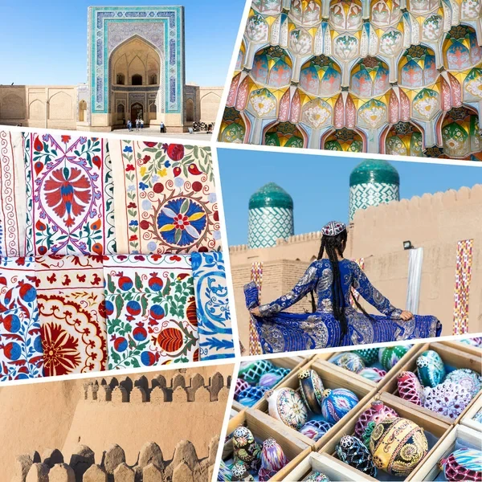
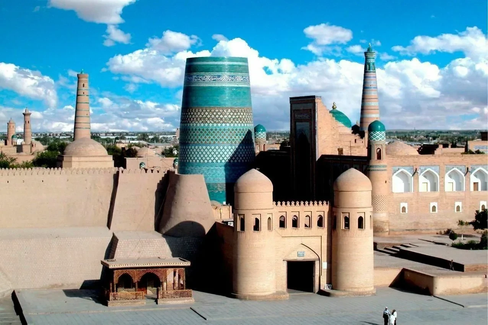
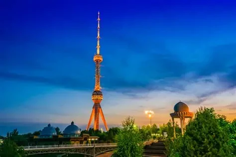
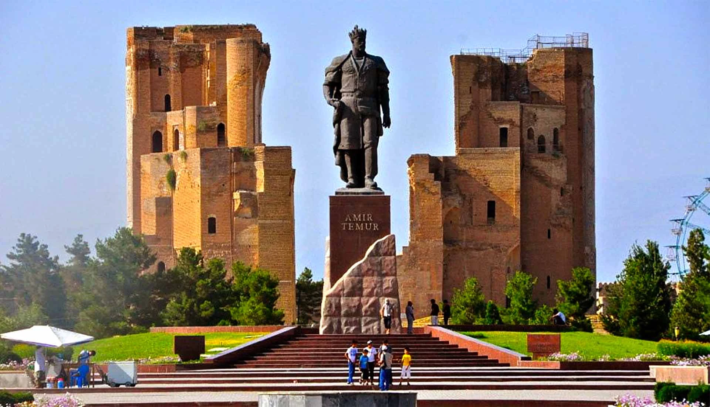
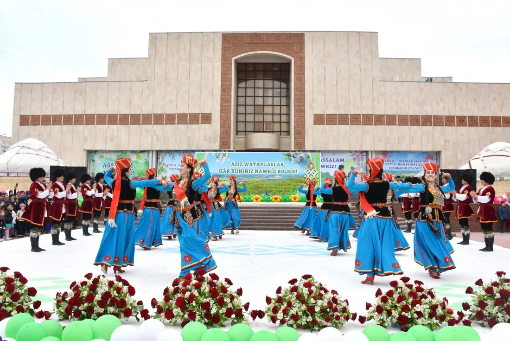
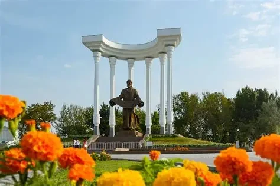
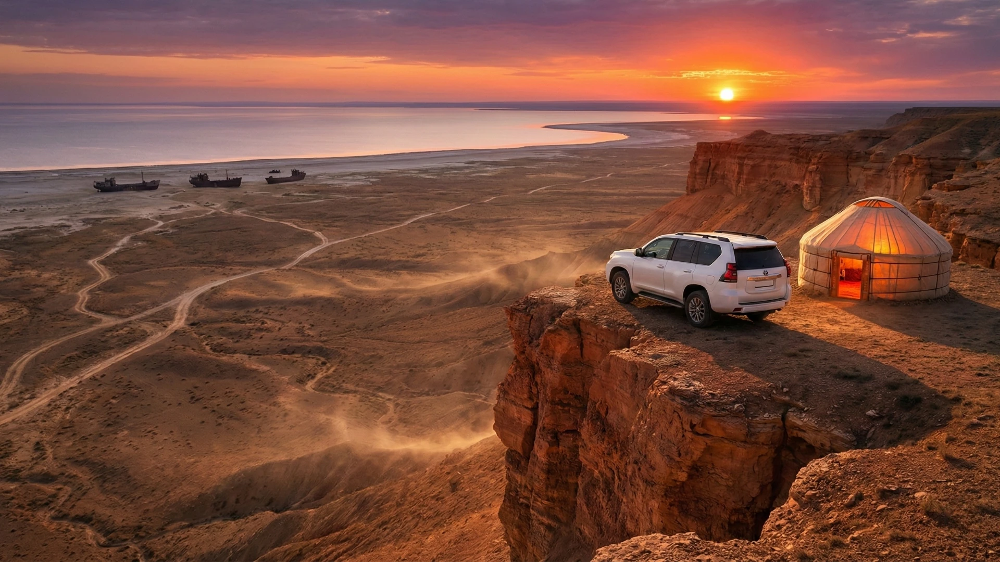

Самарканд
3 дня — от $150
Древний город Великого шёлкового пути с богатой историей и великолепной архитектурой. Посетите площадь Регистан, мавзолей Гур-Эмир и знаменитый Сиабский базар.
ПодробнееПутешествуйте по историческим городам и удивительным местам нашей страны
Откройте для себя богатую историю, восточную архитектуру и уникальную культуру Узбекистана. Выберите город для своего следующего путешествия!

3 дня — от $150
Древний город Великого шёлкового пути с богатой историей и великолепной архитектурой. Посетите площадь Регистан, мавзолей Гур-Эмир и знаменитый Сиабский базар.
Подробнее
3 дня — от $170
Один из древнейших городов Центральной Азии. Вас ждут исторический центр Бухары, ансамбль Ляби-Хауз, минарет Калян и старинные медресе.
Подробнее
3 дня — от $180
Уникальный город-музей, сохранивший атмосферу древнего Востока. Прогуляйтесь по крепости Ичан-Кала, посетите старинные медресе и минареты.
Подробнее
3 дня — от $120
Столица Узбекистана, сочетающая современную жизнь и восточные традиции. Посетите площадь Хаст-Имам, Чорсу, Ташкентский метрополитен и центральные площади города.
Подробнее
2 дня — от $100
Родина Амира Темура и город с богатым историческим наследием. Посетите руины дворца Ак-Сарай, мемориальный комплекс Дорус-Саодат и исторический центр города.
Подробнее
3 дня — от $180
Культурный центр Каракалпакстана и отправная точка для путешествия к Аральскому морю. Посетите музей Савицкого и познакомьтесь с уникальной культурой региона.
Подробнее
4 дня — от $200
Путешествие по живописному региону с древними ремесленными традициями. Посетите Фергану, Маргилан и Риштан, известный своей керамикой.
Подробнее
3 дня — от $220
Необычное путешествие к бывшему морскому побережью. Увидьте знаменитое кладбище кораблей, пустынные пейзажи и познакомьтесь с историей Аральского моря.
ПодробнееСвяжитесь с нами, и мы поможем подобрать подходящий маршрут.
Связаться с нами